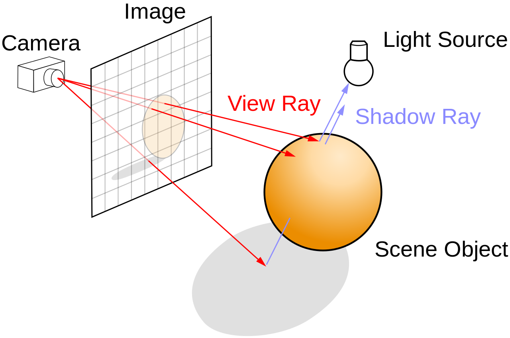
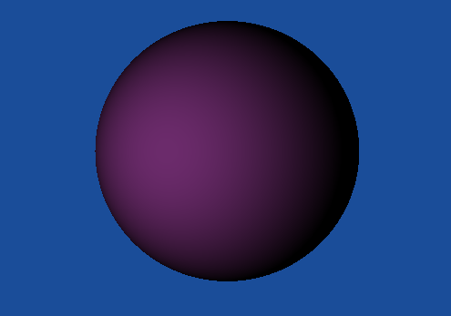
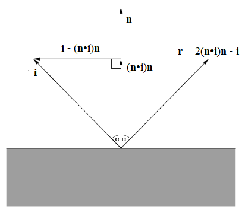
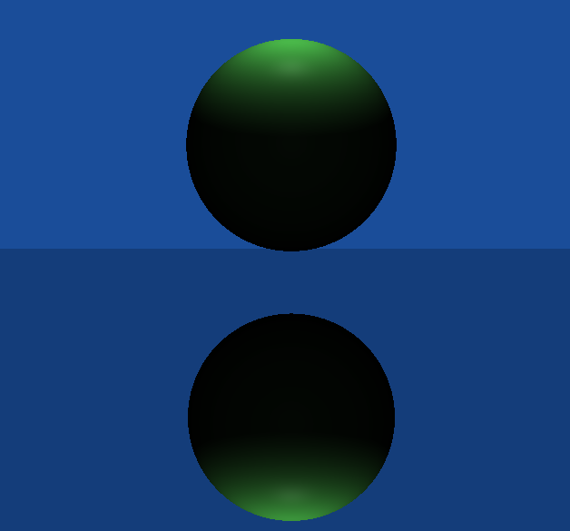
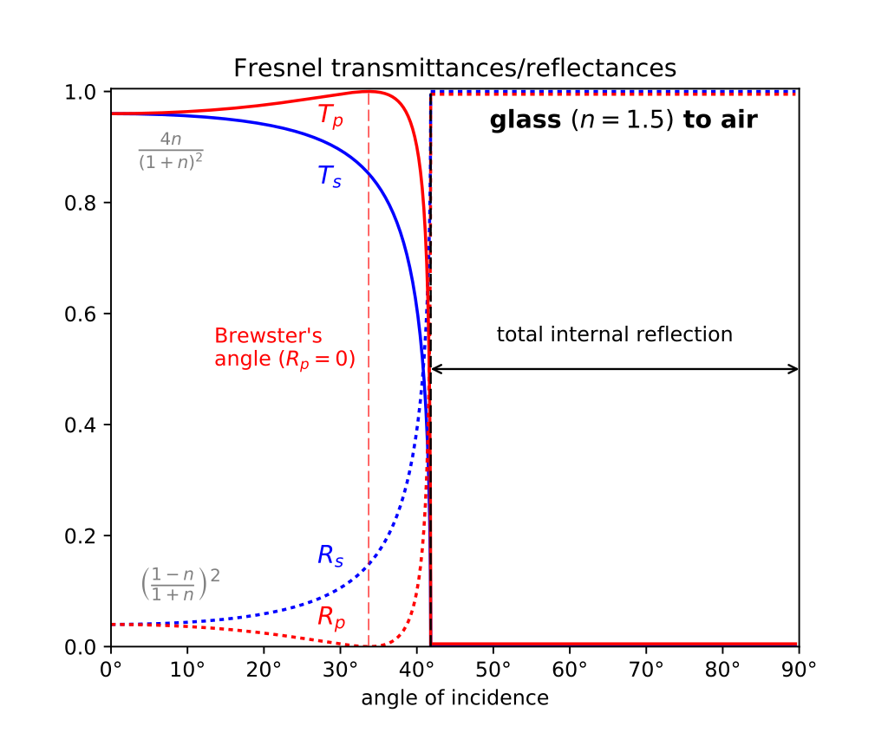
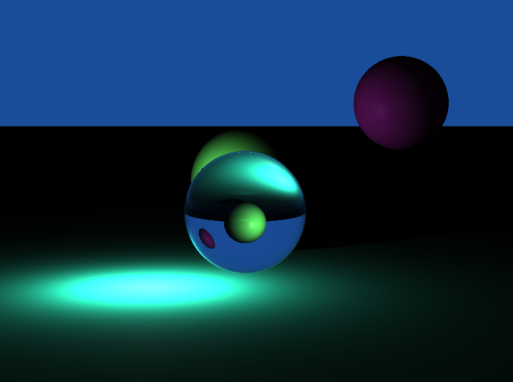
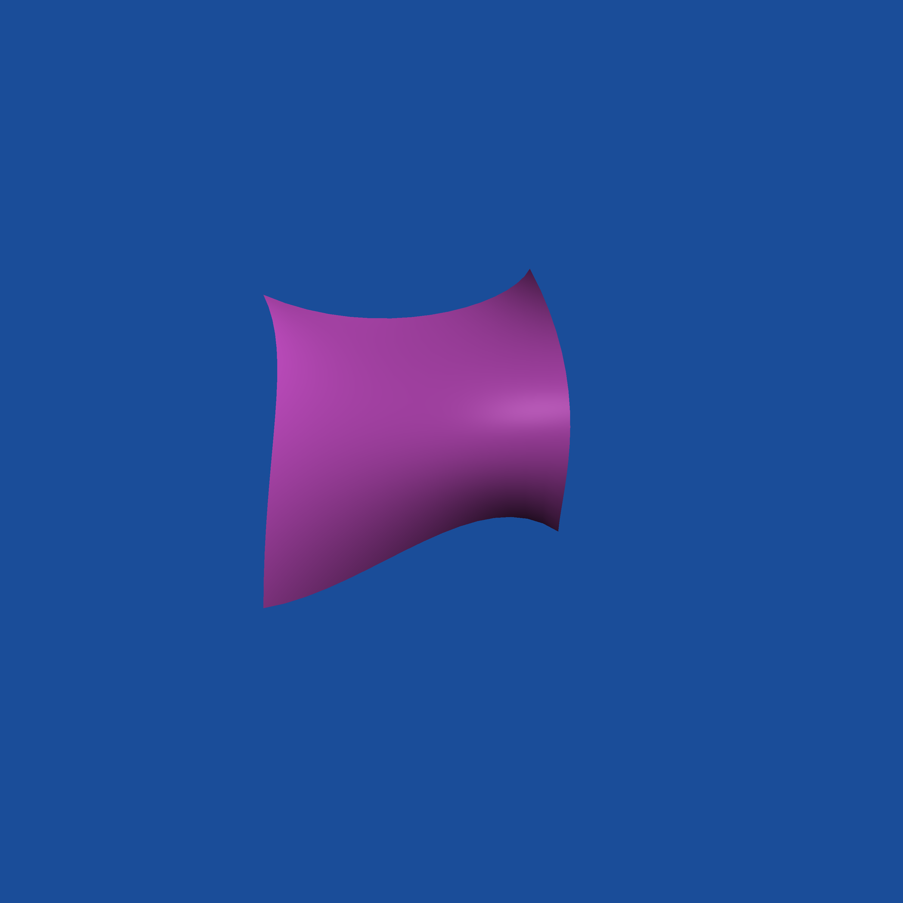
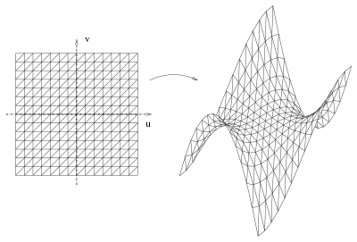

Raytracing
Il ray tracing è una tecnica di rendering in grado di produrre immagini virtuali con un elevato livello di realismo,
pur basandosi su un principio molto semplice. L'idea è quella di seguire il percorso della luce all'interno della scena,
che parte da una sorgente luminosa e interagisce con l'ambiente circostante
(attraverso fenomeni fisici come rifrazione, riflessione, diffusione....)
prima di raggiungere il nostro occhio, rendendo quindi visibili gli oggetti.
In realtà, a livello computazionale è molto più efficiente seguire questo percorso in direzione opposta, immaginando
che il raggio di luce parta dal nostro occhio, poichè solo una piccola parte dei raggi emessi da una sorgente luminosa
raggiunge effettivamente l'occhio.
Questo approccio prende in particolare il nome di backward ray tracing.
Per creare un immagine digitale 2D formata da pixel, un raggio di questo tipo (detto primary o view ray) viene
creato per ciascuno dei pixel. Se tale raggio interseca (visibility problem) un oggetto della scena, è possibile quindi calcolare
l'illuminazione di tale oggetto nel punto di intersezione (procedimento che prende il nome di shading) ed assegnare
il colore risultante al pixel d'interesse.

Shading
Il modo in cui viene calcolata l'illuminazione di un punto della scena dipende principalmente dalle proprietà del materiale di cui è composto l'oggetto che stiamo guardando, che determinano il modo in cui la luce interagisce con esso. Dal punto di vista della riflessione, possiamo identificare tre tipi di riflessione:
- Rifflessione speculare: si ottiene attraverso la legge della riflessione, che afferma
- Il raggio di incidenza, la normale alla superficie e il raggio riflesso sono coplanari;
- L'angolo di incidenza è uguale all'angolo di riflessione.
- Riflessione diffusa: si ha quando la luce proveniente da una direzione viene riflessa in molteplici direzioni diverse, invece che essere concentrata in un'unica direzione come succede nel caso della riflessione speculare. Questo tipo di riflessione è evidente negli oggetti detti opachi. Per un oggetto opaco ideale, la luce incidente viene riflessa equamente in tutte le direzioni, ne consegue quindi che l'illuminazione percepita non cambia al variare della direzione da cui guardiamo l'oggetto (view direction). Questo tipo di superficie ideale è anche nota come superficie Lambertiana.
Il programma prevede tre tipi di oggetti, a seconda del modo in cui interagiscono con la luce:
- Oggetti diffuse (opachi, o diffondenti)
- Oggetti Phong (seguono il modello di Phong)
- Oggetti mirror-like (specchi)
- Oggetti trasparenti (e.g.: acqua, vetro, ...)
Fonti luminose
Sono previsti due tipi di fonti luminose:
- Luci puntiformi (o luci sferiche): definite unicamente dalla loro posizione nello spazio (non sono influenzate da rotazioni o scalature, in quanto adimensionali). Utili per rappresentare piccole fonti di luce come lampadine, di cui però viene ignorata la "fisicità" per maggiore semplicità.
- Luci distanti: definite unicamente dalla loro direzione (non sono influenzate da traslazioni o scalature). Utili per rappresentare fonti luminose molto distanti, come il Sole, per cui si possono considerare tutti i raggi emessi come paralleli tra loro.
Square rolloff
Per le luci sferiche , l'illuminazione dipende anche dalla distanza a cui un oggetto si trova. Più precisamente, si può considerare una luce sferica puntiforme come una fonte luminosa isotropa, che emette luce in maniera uguale in tutte le direzioni. In tal caso, si può applicare la seguente legge di proporzionalità:\begin{equation} I = \frac{P}{4\pi r^{2} } \end{equation}
Dove \(I\) è l'intensità luminosa, \(r\) è la distanza dalla sorgente e \(P\) è la potenza totale.
Illuminazione su superfici lambertiane

La legge di Lambert afferma che l'illuminamento prodotto da una sorgente su una superficie è direttamente
proporzionale all'intensità luminosa della sorgente e al coseno dell'angolo che la normale alla superficie forma
con la direzione dei raggi luminosi.
\begin{equation} E = I\cdot \cos \alpha = I \cdot \textbf{n} \boldsymbol{\cdot}\textbf{l} \end{equation}
Dove \(\textbf{n} \) è il versore normale alla superficie, mentre \(\textbf{l} \) è il versore della direzione
dei raggi luminosi.
.Più precisamente, per una luce puntiforme
\begin{equation} \textbf{l} = \frac{\textbf{P}_{light} - \textbf{P}_{hit}}
{\left \| \textbf{P}_{light} - \textbf{P}_{hit}\right \|} \end{equation}
dove \(\textbf{P}_{hit} \) è il punto
considerato sulla superficie, mentre \( \textbf{P}_{light}\) è il punto che identifica la posizione di una sorgente
luminosa puntiforme. Per una luce distante, invece, la direzione è una proprietà intrinseca della sorgente luminosa.
L'intensità luminosa che compare nella formula, \( I \), è calcolata per le sorgenti puntiformi utilizzando la legge inversa
del quadrato descritta precedentemente, mentre per le luci distanti si utilizza direttamente l'intensità luminosa alla
sorgente.
L'intensità luminosa della superficie dipende poi, ovviamente, anche da quanta della luce ricevuta viene riflessa
nelle varie direzioni e da quanta viene invece assorbita. Il rapporto tra la quantità di luce emessa e quella ricevuta
è detta albedo.
Quindi, l'ammontare totale di energia luminosa riflessa dalla superficie diffondente è dato da:
\begin{equation} F_{tot} = albedo \cdot E = albedo \cdot I\cdot \cos \alpha \end{equation}
Poichè questa energia viene distribuita uniformemente su un emisfero centrato sul punto osservato ed orientato
nella direzione della normale alla superficie, per ottenere la quantità di luce riflessa nella direzione della visuale
bisogna dividere per \( \pi \).
\begin{equation} L = \frac{F_{tot}}{\pi} \end{equation}
Come anticipato, la quantità di luce riflessa è indipendente dalla direzione della visuale.
Riflessione speculare
Usando la legge della riflessione, date la direzione incidente \( \textbf{l} \) e la normale \( \textbf{n} \) (si assume entrambi siano vettori di norma unitaria) è facile calcolare la direzione della riflessione:\begin{equation}\textbf{r} = 2(\textbf{n}\cdot \textbf{i})\textbf{n} - \textbf{i} \end{equation}

A livello implementativo, quando la direzione della visuale interseca una superficie riflettente, calcoliamo la direzione di riflessione e generiamo un nuovo "raggio", avente come origine il punto di intersezione e come direzione quella di riflessione. Questo raggio può potenzialmente intersecare a sua volta una superficie riflettente, di conseguenza il processo è ricorsivo. Potenzialmente, una scena potrebbe causare una ricorsione infinita, o comunque generare un numero così elevato di riflessioni da rendere la computazione molto lenta (senza particolari miglioramnti dal punto di vista del realismo dell'immagine ottenuta). Per questo motivo, si definisce una costante che limita il numero massimo di livelli che può raggiungere questo procedimento ricorsivo (le immagini dimostrative sono state generate usando come limite 5 livelli).

Rifrazione
Quando un raggio di luce "passa" da un mezzo trasparente ad un altro, la sua direzione viene alterata. La nuova direzione dipende dalla direzione incidente e dagli indici di rifrazione dei due mezzi. L'indice di rifrazione è un numero adimensionale definito come il rapporto tra la velocità della luce nel vuoto e la velocità di fase della radiazione che attraversa il mezzo:
\begin{equation} \eta = \frac{c}{v} \end{equation}
Per ricavare la direzione di rifrazione si utilizza la legge di Snell:
\begin{equation} \frac{\sin{\theta_1}}{\sin{\theta_2}} = \frac{\eta_2}{\eta_1} \end{equation}
dove \( \theta_1 \) è l'angolo di incidenza, mentre \( \theta_2 \) è l'angolo di rifrazione.
Data la direzione incidente \( \textbf{i} \) e quella della normale \( \textbf{n} \), con alcuni passaggi si ricava la direzione del raggio rifratto:
\begin{equation} \textbf{t} = \eta \textbf{i} + (\eta c - \sqrt{h} )\textbf{n} \\ \end{equation}
\begin{equation} \text{dove} \quad \eta = \frac{\eta_1}{\eta_2} ; \quad c = \textbf{n} \cdot \textbf{i} = \cos{\theta_1} ; \quad h = 1 - \eta^2 (1-c^2) \end{equation}
Quando passando da un mezzo ad un altro l'indice di rifrazione aumenta, se l'angolo di incidenza supera l' angolo critico, si verifica un fenomeno detto riflessione interna totale: la luce viene completamente riflessa e non si ha rifrazione. L'angolo critico si ottiene partendo dalla legge di Snell ed imponendo \begin{equation} \theta_2 = \frac{\pi}{2} \Rightarrow \sin{\theta_2} = 1 \Rightarrow \theta_{crit} = \arcsin{(\frac{\eta_1}{\eta_2})} \end{equation}
Si ha quindi riflessione interna totale quando
\begin{equation} \theta_1 > \theta_{crit} \end{equation}
che è analogo a verificare \( h < 0 \)
Legge di Fresnel
Gli oggetti trasparenti esibiscono in realtà sia rifrazione che riflessione. La quantità di luce che viene riflessa o rifratta dipende dall'angolo di incidenza. All'aumentare dell'angolo di incidenza la quantità di luce rifratta diminuisce sempre più, fino a diventare nulla nel caso della riflessione totale interna. Precisamente, la frazione di luce che viene riflessa si può calcolare usando la legge di Fresnel: \begin{equation} R = \frac{I_r}{I_i} \end{equation}
\(R \) è il coefficiente di riflessione, rapporto tra l'intensità della radiazione riflessa \((I_r)\) e della radiazione incidente \((I_i)\).
Questo viene separato in due componenti con polarizzazione perpendicolare tra loro:
\begin{equation} R_s = (\frac{\eta_1 \cos{\theta_1} - \eta_2 \cos{\theta_2}} {\eta_1 \cos{\theta_1} + \eta_2 \cos{\theta_2}})^2 \quad R_p = (\frac{\eta_1 \cos{\theta_2} - \eta_2 \cos{\theta_1}} {\eta_1 \cos{\theta_2} + \eta_2 \cos{\theta_1}})^2 \end{equation}
Per ottenere il coefficiente di riflessione effettivo per una luce "naturale" (che viene solitamente descritta come non polarizzata), si calcola una media delle due componenti:
\begin{equation} R_{eff} = \frac{R_s + R_p}{2} \end{equation}
La frazione di luce rifratta si calcola semplicemente come:
\begin{equation} T_{eff} = 1 - R_{eff} \end{equation}
Questi due sono i coefficienti che utilizziamo nella pratica per "pesare" le due componenti di rifrazione e di riflessione.
Anche calcolare l'illuminazione di una superficie trasparente, avendo sempre una componente riflettente, è un procedimento ricorsivo. Per oggetti geometrici molto semplici, come le sfere visibili nell'immagine seguente, il limite di 5 livelli che imponiamo alla ricorsione è sufficiente per ottenere ottimi risultati. Tuttavia, lo stesso non si può dire nel caso di oggetti trasparenti complicati, come un oggetto ottenuto tramite incollamento di più superfici (di Bézier o spline, ad esempio) e triangolazione.

Superfici di Bézier
 Una superficie di Bézier di bigrado (m,n) è definita da una griglia bidimensionale di (m+1)*(n+1) punti di controllo \( \{ \textbf{P}_{i,j} \} \), che costituiscono il cosiddetto poliedro di controllo. Come superficie parametrica, una superficie di Bézier è una funzione di due parametri \( (u, v) \), dove il valore della superficie nel punto \( \textbf{P}(u,v) \) è così calcolabile:Dove \( B_i^m(u) \) è un polinomio di Bernstein, così definito in generale:
Come le curve di Bézier, le superfici godono di diverse proprietà utili:
- Sono invarianti rispetto alle trasformazioni affini dei punti di controllo
- Iniziano e finiscono nei punti di controllo, ovvero:
\begin{equation} \textbf{P}(0,0) = \textbf{P}_{0,0} \quad \textbf{P}(1,0) = \textbf{P}_{m,0} \quad \textbf{P}(0,1) = \textbf{P}_{0,n} \quad \textbf{P}(1,1) = \textbf{P}_{m,n} \end{equation}
- Sono sempre contenute nell'inviluppo convesso dei punti di controllo.
- Portiamo fuori dalla sommatoria più interna i polinomi di Bernstein di grado \( m \), che non dipendono
dall'indice \( j \):
\begin{equation} \textbf{P}(u,v) = \sum_{i=0}^{m} B_i^m(u) ( \sum_{j=0}^{n} B_j^n(v) \textbf{P}_{i,j} ) \end{equation}
-
Definiamo, per ogni \( i \in \{0, ..., m\} \)
\begin{equation}\textbf{Q}_i(v) = \sum_{j=0}^{n} B_j^n(v) \textbf{P}_{i,j} \end{equation}
Abbiamo quindi \( m+1 \) curve di Bézier di grado \( n+1 \), ciascuna definita rispettivamente dai punti di controllo \( \textbf{P}_{i,0}, ..., \textbf{P}_{i,n} \) (l'\(i\)-esima colonna del poliedro di controllo). -
Possiamo quindi valutare ciascuna di queste curve (usando l'algoritmo di de Casteljau) per \( v = \bar{v} \) ed ottenere \( m+1 \) punti, ricavando quindi:
\begin{equation} \textbf{P}(u,\bar{v}) = \sum_{i=0}^{m} B_i^m(u) \textbf{Q}_i(\bar{v}) \end{equation} - Quella ottenuta così è una curva di Bézier nella direzione \( u \), di grado \( m+1 \), che possiamo facilmente valutare per \( u = \bar{u} \)
Triangolazione di superfici
 Calcolare direttamente l'intersezione di una retta con una superficie di Bézier è difficile e computazionalmente inefficiente, per cui solitamente queste vengono triangolate prima di farne un rendering tramite ray tracing. Per triangolare una superficie di Bézier, è più semplice triangolare il suo dominio (il quadrato unitario, normalmente), suddividendolo prima in rettangoli e successivamente suddividendo ogni rettangolo in due triangoli. Per semplicità, il programma di rendering sviluppato prevede una suddivisione uniforme e uguale in entrambe le direzioni \( u \) e \( v \). Poichè l'effettiva forma ed estensione della porzione di superficie su cui ogni triangolo viene mappato è ignorata, questo approccio può essere inefficiente o dare risultati esteticamente meno piacevoli rispetto ad un algoritmo "adattivo".Curve B-Spline
Le curve B-Spline offrono diversi vantaggi rispetto alle curve di Bézier, di cui rappresentano una generalizzazione. Infatti, le curve di Bézier possiedono alcune importanti limitazioni:-
Il grado della curva è strettamente legato al numero dei punti di controllo. Quindi, curve con un numero
elevato di punti di controllo diventano rapidamente inefficienti da gestire computazionalmente, in quanto
richiedono di lavorare con polinomi di grado elevato.
Nelle curve B-Spline, il numero di punti controllo non dipende dal grado della curva (l'unica limitazione è che il grado sia sempre minore del numero di punti di controllo). - Non è possibile avere un controllo locale sulla forma della curva: la modifica della posizione di un punto di controllo si propaga sull'aspetto della intera curva di Bézier. Le curve B-Spline invece, permettono di avere controllo locale.
Una curva B-Spline è definita da:
- \( n + 1 \) punti di controllo: \( \textbf{P}_0, \textbf{P}_1, ..., \textbf{P}_n \);
- Il grado della curva \( p \) (a volte si indica invece l'ordine della curva, uguale a \( p-1 \) );
- Un vettore di \( p + n + 2 \) nodi (knots): \( (u_0, u_1, ..., u_{p+n+1}) \), necessariamente ordinati in maniera non decrescente.
Se non viene imposta alcuna restrizione sui nodi della curva, questa in generale non passerà per nessuno dei suoi punti di controllo, nemmeno il punto iniziale o quello finale (come invece accade per le curve di Bézier). La molteplicità di un nodo è il numero di volte che questo occorre all'interno del vettore dei nodi. Se si vuole che la curva passi per il primo e l'ultimo punto di controllo, è necessario che il primo e l'ultimo nodo abbiano molteplicità \( p+1 \). Curve B-Spline aventi questa proprietà vengono chiamate curve clamped.
L'equazione parametrica di una curva B-Spline è:
Queste vengono definite ricorsivamente come segue:
\begin{equation} N_{i,p}(u) = \frac{u-u_i}{u_{i+p}-u_{i}}N_{i,p-1}(u) + \frac{u_{i+p+1}-u}{u_{i+p+1}-u_{i+1}}N_{i+1,p-1}(u) \end{equation}
Dalla definizione si ricavano le seguenti proprietà (una speculare all'altra), che sono esattamente ciò che permette di avere una forma di controllo locale:
- La funzione \( N_{i,p}(u) \) è non nulla solo per \( u \in [u_i, u_{i+p+1}) \), ovvero è non nulla solo per \( p+1 \) intervalli del vettore di nodi (knot span);
- Per ogni intervallo del vettore di nodi \( [u_i, u_{i+1}) \), al più \( p+1 \) basis function di grado \( p \) sono non-nulle, precisamente \( N_{i-p,p}(u), N_{i-p+1,p}(u),...,N_{i,p}(u) \).
- Cambiando la posizione del punto di controllo \( \textbf{P}_i \), la curva \( \textbf{P}(u) \) viene modificata solo per \( u \in [u_i, u_{i+p+1}) \), ossia vengono alterati al più \( p+1 \) segmenti di curva.
- In corrispondenza di un nodo di molteplicità \( k \), la curva ha continuità \( C^{p-k} \).
Aumentando la molteplicità di un nodo è in realtà possibile anche far sì che la curva passi per un determinato punto di controllo. Infatti, vale la seguente proprietà:
- Per ogni nodo interno di molteplicità \( k \), il numero di basis function non-nulle in quel punto è al più \( p-k+1 \).
Superfici B-Spline
Una superficie B-Spline è definita a partire dalle stesse funzioni \( N_{i,p}(u) \), similarmente a come avviene per le superfici di Bézier. In questo caso, le informazioni necessarie sono:- una griglia di \( (m+1)(n+1) \) punti di controllo \( P_{i,j} \);
- un vettore di \( s+1 \) nodi nella direzione \( u \), \( \{u_0, u_1, ..., u_s\} \);
- un vettore di \( t+1 \) nodi nella direzione \( v \), \( \{v_0, v_1, ..., v_t\} \);
- il grado \( p \) nella direzione \( u \);
- il grado \( q \) nella direzione \( v \).
Superficie B-Spline di bigrado \((3,3)\), con \(m=4\) e \(n=4\)
La stessa superficie, con bigrado aumentato a \((4,4)\)
Interpolazione con curve e superfici B-Spline
Interpolazione con curve
Supponiamo di avere \( n+1 \) punti nello spazio \( D_0, ..., D_n \) e di volerli interpolare mediante una curva B-Spline di grado \( p \) (il grado viene dato come input). In questa formulazione del problema, i parametri per l'interpolazione \( t_0, t_1, ..., t_n \) non sono forniti dall'utente e vanno quindi generati mediante qualche tecnica, ad esempio in maniera uniforme oppure basandosi sulla distanza tra i punti da interpolare (chord length method).Per la definizione di una curva B-Spline è necessario avere anche un vettore di nodi. Anche questo può essere generato in maniera uniforme, oppure appoggiandosi sui valori dei parametri calcolati precedentemente. A questo punto rimangono solo da determinare gli \( n+1 \) punti di controllo \( P_i \) tali che:
Abbiamo quindi \( (n+1) \) equazioni, che possiamo riscrivere come sistema utilizzando le seguenti matrici "formali" di punti:
\( NP=D \)
ossia
Scrivendo al posto di ogni punto le sue coordinate affini come vettore riga, nel caso di punti nello spazio tridimensionale abbiamo in pratica 3 sistemi lineari da risolvere (risolvendo per colonna), ciascuno in \( n+1 \) equazioni ed \( n+1 \) incognite. La determinazione dei punti di controllo quindi si riduce alla risoluzioni di questi sistemi lineari.
Interpolazione con superfici
Per l'interpolazione tramite superfici, il ragionamento visto nel caso delle curve si estende abbastanza facilmente. In questo caso ci viene data una matrice di \( (m+1) \) righe ed \( (n+1) \) colonne di punti \( D_{i,j} \) nello spazio, che vogliamo interpolare utilizzando una superficie B-Spline di bigrado \( (p,q \) definita da \( (m+1)(n+1) \) punti di controllo.Vanno quindi determinati \( m + 1 \) parametri \( s_0, s_1, ..., s_m \) nella direzione \( u \) e \( n + 1 \) parametri \( t_0, t_1, ..., t_n \) nella direzione \( v \), così da imporre:
Manipolando questa espressione otteniamo
\(\textbf{D}_{c_d}\) è il punto su una curva B-Spline, valutata in \(s_c\), di grado \(p\) e definita dalla colonna \(d\) dei punti di controllo \(\textbf{Q}\).
In questo modo, possiamo determinare la \(i\)-esima colonna dei punti di controllo "intermedi" \(\textbf{Q}\) a partire dalla \(i\)-esima colonna dei punti dati \(\textbf{D}\) e dai parametri \( s_0, s_1, ..., s_m \), facendo un'interpolazione tramite curve B-Spline. Una volta ottenuti i punti \( \textbf{Q} \), per ottenere la \(i-esima\) riga degli effetti punti di controllo \(\textbf{P}\) si fa un'altra interpolazione tramite curve B-Spline, questa volta con una curva di grado q, utilizzando come punti l'\(i\)-esima riga dei punti \(\textbf{Q}\) ed i parametri \( t_0, t_1, ..., t_n \).